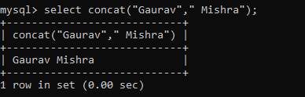
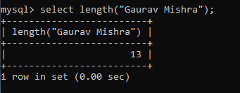
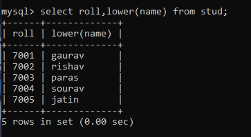
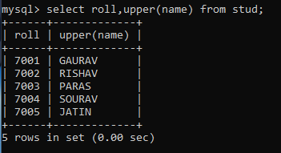
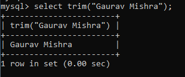
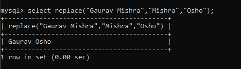
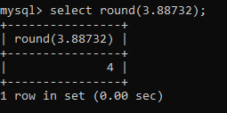
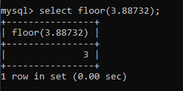
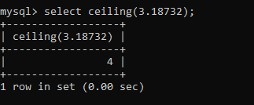

Scalar fonction
A Scalar function is a function that returns a single value.
My sql provides a number of scalar functions that can be used to perform various operations on data. Some of the are:
CONCAT: used to concatenate two or more strings together.
Syntax or example :
mysql> select concat(string, string,...);

LENGTH: used to return the length of a string.
Syntax or example:
mysql> select length(string);

LOWER: used to convert a string to lowercase.
Syntax or example:
mysql> select lower(string);

UPPER: used to convert a string to uppercase.
Syntax or example: :
mysql> select upper(string);

TRIM: used to remove leading or trailing spaces from a string.
Syntax or example: :
mysql> select trim(string);

REPLACE: used to replace occurrences of a substring within a string.
Syntax or example: :
mysql> select replace(string, substring, new_substring);

ROUND: used to round a number to a specified number of decimal places.
Syntax or example: :
mysql> select round(number);

FLOOR: used to round a number down to the nearest integer.
Syntax or example:
mysql> select floor(number);

CEILING: used to round a number up to the nearest integer.
Syntax or example: :
mysql> select ceiling(number);
